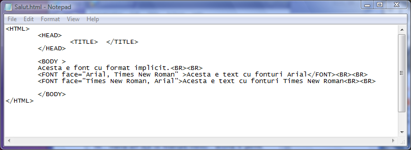
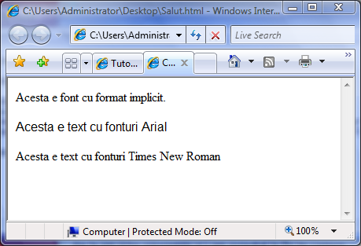
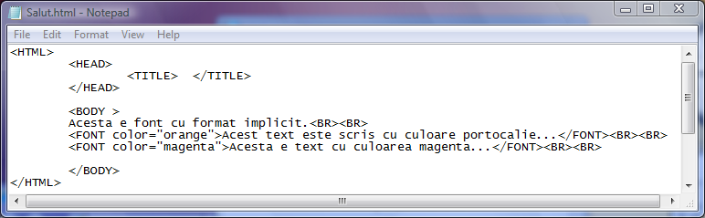
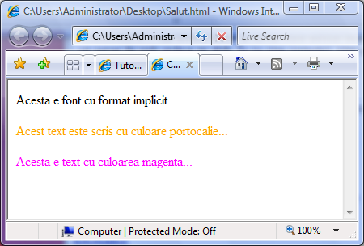
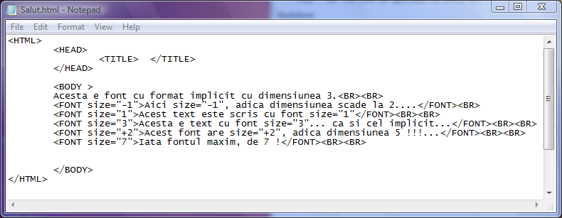
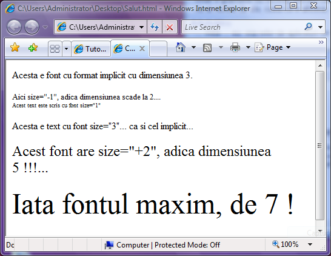

Blocuri FONT
O alta metoda pentru formatarea caracterelor este incadrarea blocului de
text intre doua etichete FONT si respectiv /FONT.... Atributele etichetei FONT permit
configurarea mai multor caracteristici ale fonturilor utilizate in pagina web:
a)Atributul face="lista fonturi"
Exista cinci tipuri generice de fonturi care de regula sunt disponibile pe toate calculatoarele:
Serif, Sans Serif, Cursive, Monospace si Fantasy. Alte fonturi specifice pot fi utilizate doar
daca ele sunt utilizate pe calculatorul-client, ca de exemplu Times (un tip particular de font serif),
Helvetica (un tip particular de font sans serif), Arial, Courier (un tip particular de font monospace),
Western (un tip particular de font fantasy), etc.
Atributul face permite ca valori o lista de fonturi, de exemplu:
face="Arial, serif, monospace"
...browserul alegand primul dintre tipurile de fonturi instalat pe calculatorul client.
Iata un exemplu de mod in care browserul seteaza tipul de fonturi din lista specificata...


b)Atributul color="culoare"
Atributul color seteaza culoarea cu care vor fi afisate fonturile in pagina web, in doua
moduri:
-prin specificarea unui nume valid de culoare in limba engleza (de ex. "black", "green", "magenta")
-prin specificarea codului hexazecimal al culorii, cu sintaxa color="#RRGGBB" (de ex. "#ff0000")
Iata si un exemplu in care este setata doar culoarea fonturilor cu atributul color:


c)Atributul size="n"
Atributul size seteaza dimensiunea fonturilor. Valorile lui n pot fi:
-un numar natural intre 1 (pentru cel mai mic font) si 7 (pentru cel mai mare font)
-un numar precedat de semnul +, +1, +2.... ceea ce inseamna marirea fonturilor nu n unitati fata
de cat erau dimensiunile lor inaintea blocului FONT
-un numar precedat de semnul - , -1, -2, .... ceea ce inseamna dimensiuni cu n unitati mai mici
fata de fonturile precedeente blocului FONT


d)Atributul point-size="n"
Atributul point-size defineste marimea exprimata in puncte tipografice a fonturilor. Valoarea lui n
este orice numar natural.Atributul point-size nu este interpretat de Internet Explorer...
e)Atributul weight="n"
Atributul weight seteaza grosimea caracterelor,n putand lua valorile 100 (pentru fontul cel mai
subtire), 200, 300, 400, 500, 600, 700, 800 si 900 (pentru fontul cel mai gros). Nici atributul
weight nu este interpretat de Internet Explorer
Inapoi la Blocuri de text...